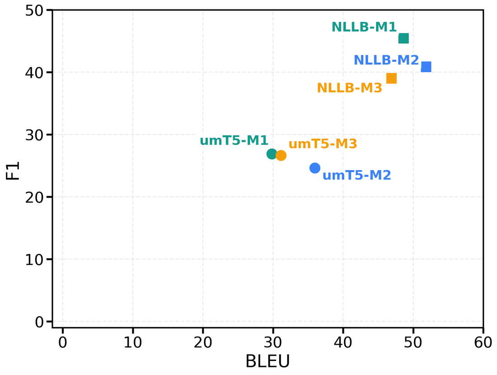

We start from MedMentions ST21pv, drop overlapping and unlabeled sentences, and carry the English UMLS annotations across to Vietnamese in three stages.
*Equal contribution.
For Vietnamese biomedical NER, multilingual pretraining and frontier LLM prompting are no substitute for target-language annotation: a Vietnamese encoder fine-tuned on En-ViMedNER reaches 52.70 F1 — 16.16 points above English-supervised multilingual transfer on the same test set, and 17.31 above the best 3-shot frontier LLM on the human-audited mini-test.
| Vietnamese biomedical NER — best system per setting | mini-test F1 | Full test F1 |
|---|---|---|
| Vietnamese-supervised encoder — ViPubMedDeBERTa† | 53.78 | 52.70 |
| English-supervised multilingual encoder — XLM-R-large | 37.95 | 36.54 |
| Best prompted LLM — gemini-3.1-flash-lite-preview, 3-shot | 36.47 | — |
| Best open-source LLM — Qwen-SEA-LION-v4-8B-VL, 3-shot | 13.09 | — |
Vietnamese supervision beats English-supervised transfer by 16.16 F1 and the strongest prompted frontier LLM by 17.31 F1 — so En-ViMedNER is a training resource, not only a benchmark. Prompt-based LLMs are evaluated on the mini-test only. †The best checkpoint differs by split: ViPubMedDeBERTa-xsmall on the mini-test (53.78), ViPubMedDeBERTa-base on the full test set (52.70).
Biomedical named entity recognition underpins clinical decision support and medical information extraction. English has UMLS-annotated corpora such as MedMentions; Vietnamese has nothing comparable. We present En-ViMedNER, the first English–Vietnamese parallel biomedical NER corpus annotated with UMLS semantic types — language-neutral codes that give both sides a shared label space and keep the resource directly comparable with existing UMLS-based corpora.
The corpus contains 4,392 PubMed abstract pairs, 44,892 sentence pairs, and 202,949 aligned entity-mention pairs across the 21 semantic types of MedMentions ST21pv. To balance quality against scale, we built it through automatic translation, medical expert post-editing, LLM-assisted label projection, and human verification and adjudication. We characterise it as a large-scale silver-standard corpus with a human-audited, consensus-corrected 450-sentence mini-test subset.
We evaluate it in two settings. In Vietnamese-input/Vietnamese-output NER, the best model reaches 52.70 F1 on the test set and 53.78 on the mini-test. In English-input/Vietnamese-output cross-lingual NER, the best model reaches 45.44 F1 on the mini-test. We release the corpus, the construction pipeline, and the baseline models, and we argue that similar semi-automated efforts are worth making for other low-resource languages.
We start from MedMentions ST21pv, drop overlapping and unlabeled sentences, and carry the English UMLS annotations across to Vietnamese in three stages.
The English labels never pass through the translator: they are projected onto the already-finalized, expert-post-edited Vietnamese text. That rules out marker-based projection, which needs markers in the English source before translation, and weakens token-alignment tools, because post-editing often paraphrases non-literally (animals → động vật thí nghiệm, "laboratory animals").
The audit measures the projection itself: 98.32% entity-level exact match before any manual correction, with pooled Cohen's κ = 0.83 between the two independent reviewers. The mini-test we release is the corrected version; the 98.32% figure describes what the LLM projection got right on its own.
| Split | Abstract pairs | Sentence pairs | Aligned entity-mention pairs |
|---|---|---|---|
| train | 2,635 | 27,013 | 122,017 |
| dev | 878 | 8,932 | 40,844 |
| test | 879 | 8,947 | 40,088 |
| mini-test† | — | 450 | 2,085 |
| Total | 4,392 | 44,892 | 202,949 |
†The mini-test is sampled from the test set for human evaluation; it is not an additional split.
Vietnamese supervision cannot be replaced by English supervision. Fine-tuned on the Vietnamese split, ViPubMedDeBERTa-base reaches 52.70 F1 on the full test set — 16.16 points above XLM-R-large fine-tuned on the English split and evaluated on the same Vietnamese text. Multilingual pretraining does not transfer Vietnamese entity boundaries, terminology, or labels for free.
Few-shot examples help LLMs, but not enough. Prompting improves steeply with examples — gemini-3.1-flash-lite-preview goes from 12.70 to 36.47 F1 between zero-shot and 3-shot, and Qwen-SEA-LION-v4-8B-VL from 1.59 to 13.09 — yet the best prompted model still trails the best fine-tuned encoder by 17.31 F1. In-context examples teach the BIO format, not the biomedical task.
Parallel supervision also carries cross-lingual NER. On English-input/ Vietnamese-output generation, fine-tuned NLLB-M1 reaches 45.44 Judge-F1, ahead of gpt-5.4-3shot by 2.80 and gemini-3.1-flash-lite-preview-3shot by 3.89 points.
End-to-end and cascaded pipelines win under different metrics. Direct translate-and-tag generation is best under Judge-F1 (which accepts a valid Vietnamese paraphrase of a gold entity), while the tag-first NER → translate cascade is best under the stricter Exact-F1, reaching 15.98 for NLLB-M3. Which pipeline is better depends on what you are willing to count as correct.
Higher BLEU does not imply better NER. NLLB-M2 has the best BLEU of the NLLB systems but a lower F1 than NLLB-M1; the same inversion appears for umT5. Fluent translation is not the same as preserving entity spans and labels through translation.
Open-source LLMs mostly fail to emit valid output. Between 114 and 292 of 450 cross-lingual outputs come back unparseable or entirely untagged, which caps their Judge-F1 at 18.43 even for the strongest of them.
The three fine-tuned settings. M1 generates the tagged Vietnamese sentence in one step; M2 and M3 split translation and tagging, differing in which comes first.
Mini-test results. Judge-F1 comes from an LLM-as-a-judge protocol that accepts a semantically equivalent Vietnamese entity translation (human–LLM agreement, Cohen's κ = 0.87); Exact-F1 requires an exact surface and label match. Inv. counts generated sentences with no valid entity tags, out of 450. The fine-tuned encoder-decoders are umT5-base and NLLB-200-distilled-600M.
| Setting / Model | BLEU | Judge-F1 | Exact-F1 | Inv. |
|---|---|---|---|---|
| Fine-tuned multilingual encoder-decoder models | ||||
| NLLB-M1: Direct Trans.+NER | 48.63 | 45.44 | 15.77 | 0 |
| NLLB-M2: Trans. → NER | 51.83 | 40.87 | 13.64 | 0 |
| NLLB-M3: NER → Trans. | 46.90 | 39.02 | 15.98 | 0 |
| umT5-M1: Direct Trans.+NER | 29.85 | 26.88 | 6.01 | 0 |
| umT5-M3: NER → Trans. | 31.15 | 26.64 | 7.33 | 0 |
| Prompt-based LLMs (3-shot) | ||||
| gpt-5.4 | 53.34 | 42.64 | 9.84 | 0 |
| gemini-3.1-flash-lite-preview | 48.80 | 41.55 | 10.40 | 0 |
| Qwen-SEA-LION-v4-8B-VL | 52.89 | 18.43 | 9.85 | 228 |
| Qwen2.5-7B-Instruct | 43.66 | 11.94 | 5.34 | 115 |
The highest-BLEU rows are not the highest-F1 rows: good sentence-level translation does not by itself preserve entity boundaries and labels.

Circles are umT5-base, squares are NLLB-200-distilled-600M; each point is one setting. The axes do not rank the settings the same way — M2 sits furthest right in both model families, but M1 sits highest.
En-ViMedNER is a silver-standard corpus: exhaustive independent verification and consensus adjudication cover the 450-sentence mini-test, not all 44,892 sentence pairs, and random sampling does not guarantee coverage of every rare semantic type or difficult translation phenomenon. Annotation and evaluation run at the sentence level, so translations that depend on abstract-level context (animals → động vật thí nghiệm, "laboratory animals") can read as unnatural in isolation, and the same surface form may be translated in one place and kept in English in another. The corpus is built from PubMed abstracts, so models trained on it should not be assumed reliable on clinical notes, patient-facing text, or safety-critical applications without further validation.
@inproceedings{vo-etal-2026-en-vimedner,
title = "{E}n-{V}i{M}ed{NER}: An {E}nglish-{V}ietnamese Parallel Biomedical Corpus with {UMLS} Semantic Type Annotations",
author = "Vo, Nhu and
Nguyen, Phuong and
Le, Nu Uyen Phuong and
Jauregi Unanue, Inigo and
Le, Dung D. and
Piccardi, Massimo and
Buntine, Wray",
booktitle = "Proceedings of the 2026 Conference on Empirical Methods in Natural Language Processing ({EMNLP} 2026)",
month = oct,
year = "2026",
address = "Budapest, Hungary",
publisher = "Association for Computational Linguistics",
note = "To appear"
}This work is part of our wider medical machine translation project at VinUniversity. This research was undertaken within the framework of the Cross-College project Robust Vietnamese–English Clinical and Educational Medical Translation (Project ID: VUNI.2324.CC06), jointly undertaken by the College of Engineering & Computer Science and the College of Health Sciences at VinUniversity. Nhu Vo acknowledges financial support from the Vingroup Scholarship and the University of Technology Sydney. Dung D. Le acknowledges partial funding from the Center for AI Research at VinUniversity.
En-ViMedNER follows the licensing conditions of both MedMentions (CC0) and UMLS. We retain only UMLS semantic type codes (e.g. T047) as labels, and do not publish UMLS concept names, definitions, or hierarchy information.